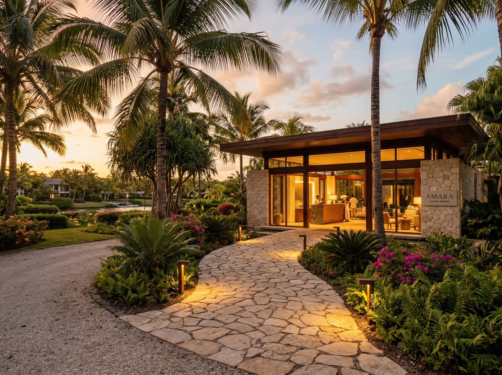
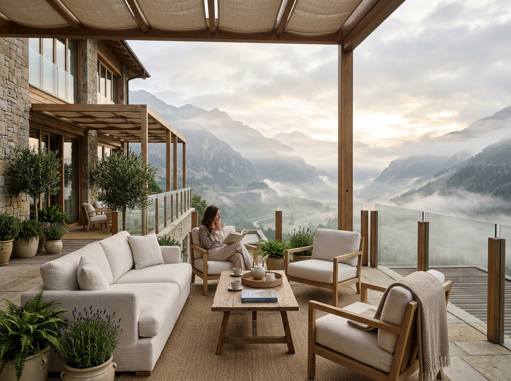
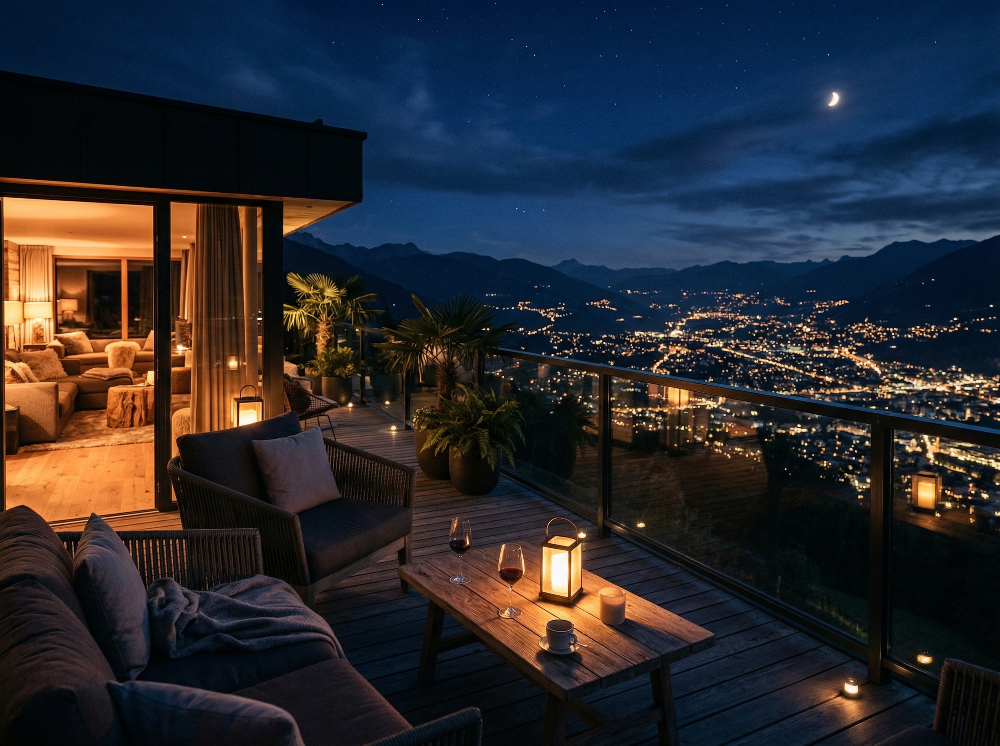
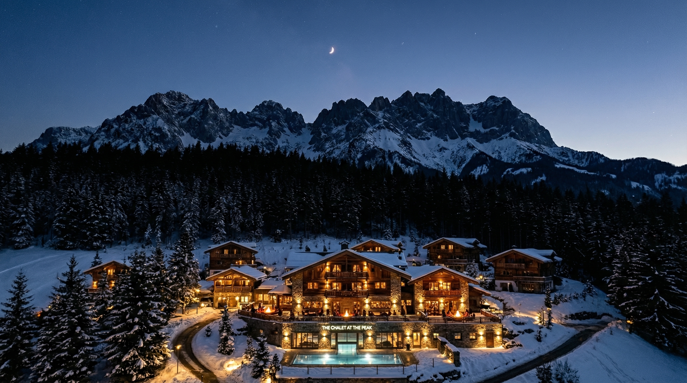
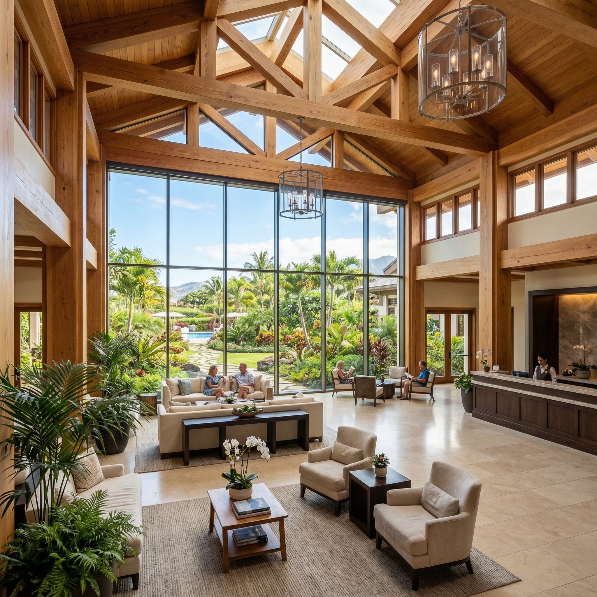
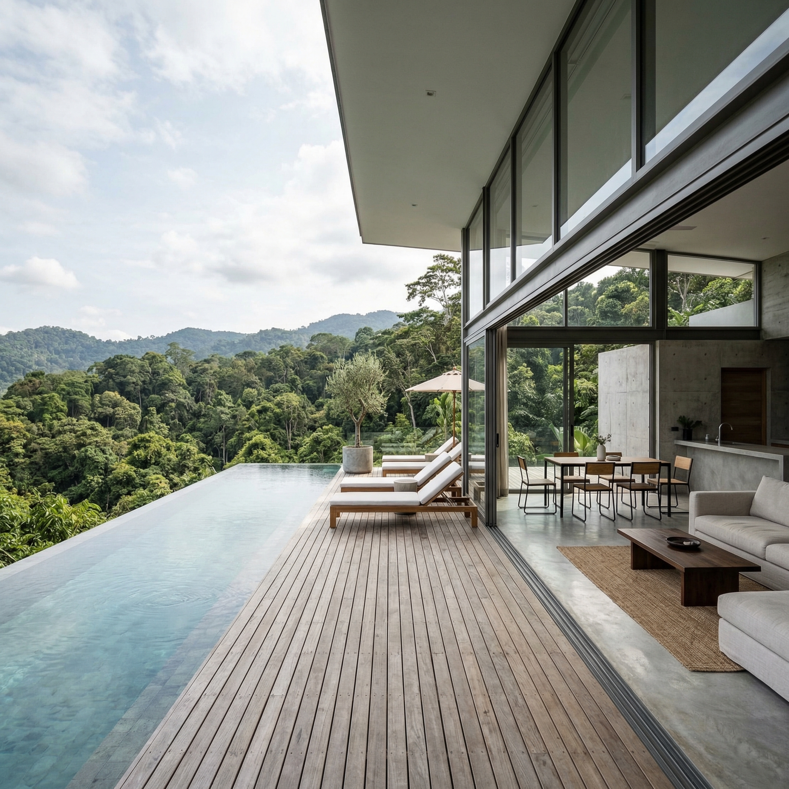

相談が多い課題
景色は良いのに、予約前に 伝わらない。 景色は良いのに、 予約前に 伝わらない。
写真点数は多いのに印象が散っている、到着時の期待と現地体験にズレがある、夜の魅力が公開導線で抜けている。そうした状態を整える相談が中心です。
Landscape Flow Design For Hospitality
リゾートホテル、旅館、ヴィラの景観体験を、
到着前の期待づくりから現地の余韻まで一連の導線として設計します。
リゾートホテル、旅館、ヴィラの景観体験を、到着前の期待づくりから現地の余韻まで一連の導線として設計します。
What We Do
Wide Horizon は、景色そのものではなく、景色に触れる順番と余白を設計するスタジオです。アプローチ、チェックイン、ラウンジ、客室、夜の回遊までをつなぎ直し、現地体験と公開導線のズレを減らします。
相談が多い課題
写真点数は多いのに印象が散っている、到着時の期待と現地体験にズレがある、夜の魅力が公開導線で抜けている。そうした状態を整える相談が中心です。
支援の起点
客室稼働や導線混雑、撮影計画、館内サインを分断せず、運営・設計・発信が同じ見せ場を共有できる状態をつくります。
Stay Sequence

車寄せ、エントランス、ロビー正面の見え方を再構成し、最初の数分で施設の方向性が伝わる流れをつくります。

客室外で過ごす時間が自然に伸びるよう、視線の抜け、着座方向、館内サイン、撮影カットまでを整理します。

夕景から夜景への切り替え、温浴後の回遊、深夜帯の静けさを含めて、夜にしか出ない魅力を伝えます。
Support Scope
館内動線と視線の抜け方を確認し、見せ場が伝わる順番を整理します。
予約導線、SNS、メディア掲載で見せるカットとコピーの優先順位を揃えます。
現地案内、客室内冊子、チェックイン時説明が同じ景観体験を支える状態に整えます。

Target Facilities
業態が変われば、整えるべき見せ場も変わります。
施設タイプごとに相談テーマを整理しています。
業態が変われば、整えるべき見せ場も変わります。施設タイプごとに相談テーマを整理しています。
チェックイン前後の静けさ、客室テラスの見せ方、連泊時の時間差演出を整えます。
ロビー、ラウンジ、プール、夕景スポットなど、滞在の中心軸を明確にします。
湯上がり動線、夜間回遊、静かな休憩スペースの見せ方を再編します。
到着時の期待づくり、館内案内、地域風景とのつながりを言語化します。
Case Studies
相談背景、整えた導線、公開後の変化を短くまとめています。
施設名は掲載用の仮称です。
相談背景、整えた導線、公開後の変化を短くまとめています。施設名は掲載用の仮称です。

夕景が強みの施設でしたが、予約前には昼の印象しか届かず、現地での満足度と発信内容にズレがありました。
公開後は「夕景を目的に選ばれた予約」が増え、滞在レビューでもラウンジ体験への言及が増加しました。

客室は魅力的でも、到着導線と夜の過ごし方が伝わらず、連泊予約へつながりにくい状態でした。
予約前の問い合わせ内容が具体化し、連泊検討層への案内がしやすくなりました。
掲載・登壇実績
2025年11月号「滞在導線と風景体験」特集に掲載。
共同調査
夜間回遊とラウンジ滞在に関する共同リサーチを実施。
登壇
「到着から余韻までの景観導線設計」をテーマに登壇。
Get Started
初回相談では、施設タイプ、相談背景、今見直したい導線を中心に整理します。
要件が固まりきっていなくても問題ありません。
初回相談では、施設タイプ、相談背景、今見直したい導線を中心に整理します。要件が固まりきっていなくても問題ありません。